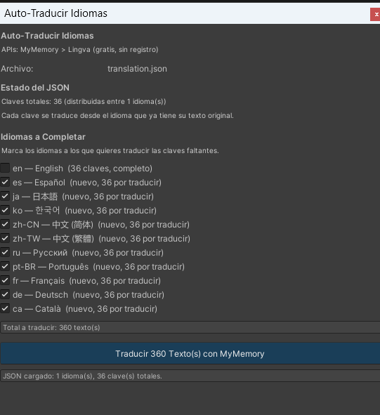
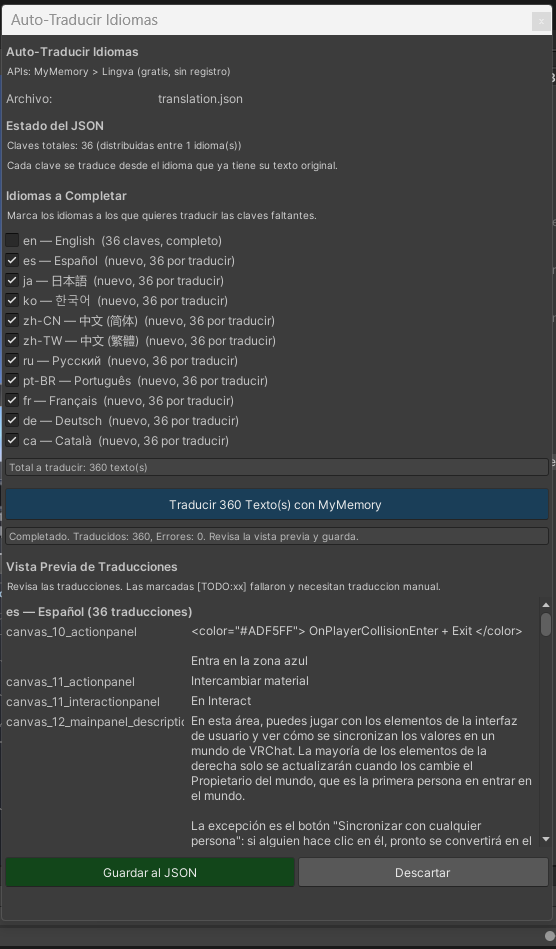

Auto-Traduccion
Traduce automaticamente tus textos usando APIs gratuitas sin registro
Descripcion
La ventana de Auto-Traduccion permite traducir automaticamente todos los textos faltantes en tu archivo JSON usando APIs gratuitas. No necesitas registrarte ni pagar — todo funciona de forma anonima.
APIs disponibles
MyMemory (principal)
- Endpoint:
api.mymemory.translated.net - Limite: 5000 caracteres por dia (uso anonimo)
- Registro: no necesario
- Calidad: buena para textos cortos de UI
- Idiomas: soporta los 11 idiomas del sistema
Lingva (respaldo)
- Se usa automaticamente cuando MyMemory falla o alcanza su limite
- Tambien gratuita y sin registro
- Basada en Google Translate via proxy open-source
Paso 1: Abrir la ventana
Desde el inspector del LocalizationManager, pulsa "Auto-Traducir Idiomas Faltantes". Tambien puedes abrirla desde el menu Tools > Idiomas > Auto-Traducir.

Paso 2: Seleccionar idiomas
Marca los idiomas a los que quieres traducir. El sistema muestra cuantas claves faltan por idioma (ej: "nuevo, 36 por traducir").
Cada clave se traduce desde el idioma que tiene texto disponible. El sistema busca la fuente en este orden de prioridad:
- Ingles (en) — si la clave tiene traduccion en ingles, se usa como fuente
- Español (es) — si no hay ingles, usa español
- Cualquier otro idioma disponible en el JSON
Paso 3: Traducir
Pulsa el boton "Traducir X textos con MyMemory". Aparece una barra de progreso mientras se procesan las traducciones una por una.
Paso 4: Revisar resultados

[TODO:xx] donde xx es el codigo del idioma.
4
Guardar al JSON — guarda todas las traducciones al archivo.
5
Estado final — confirmacion de que el JSON fue actualizado correctamente.
Paso 5: Guardar
Pulsa "Guardar al JSON". Las traducciones se guardan inmediatamente y ya estan disponibles en Play Mode.
Proteccion de Rich Text
El sistema protege automaticamente las etiquetas de rich text durante la traduccion:
- Tags como
<color=#FF0000>,<b>,<i>,<size=20>no se envian a la API - Solo se traduce el texto visible, no las etiquetas
- Despues de traducir, las etiquetas se recolocan en su posicion original
Traducciones que fallan
Si una traduccion falla (API no disponible, limite alcanzado, idioma no soportado), el texto se marca con el prefijo [TODO:xx]. Estos textos necesitan traduccion manual:
- Abre el archivo JSON con cualquier editor de texto
- Busca
"[TODO:"para encontrar las traducciones pendientes - Reemplaza el texto con la traduccion correcta
- Guarda el archivo
Consejos
- Traduce primero los idiomas mas importantes para tu audiencia
- Si alcanzas el limite diario de MyMemory, espera 24 horas o usa la exportacion CSV
- Revisa siempre las traducciones automaticas, especialmente para japones y coreano que pueden tener matices culturales
- Los textos muy cortos (1-2 palabras) suelen traducirse bien; los textos largos pueden necesitar ajustes
- Si un texto tiene rich text complejo, verifica que las etiquetas quedaron intactas despues de la traduccion